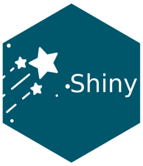
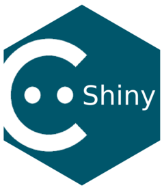

Projects
Here are my software projects.
Packages
During my free & professional time, I like to play with R, HTML, CSS, and Javascript to construct R shiny packages that facilitate the design of apps ready for production (and maximize time for Data Science & Research).

ShinyRating
ShinyRating is an R package that allow to create rating inputs in Shiny. Optimized for Bootstrap 5

ShinyFriendlyCaptcha
ShinyFriendlyCaptcha is a R package that provide a GDPR compliant Captcha to Shiny apps ((Friendly Captcha). Friendly Captcha is an European alternative to Google Recaptcha. It allow to protect websites against spam and bots in a privacy-embedded design.
(Work In Progress)
Shiny Apps
(Work In Progress)